“A journey of friendship, growth, and unforgettable moments.”
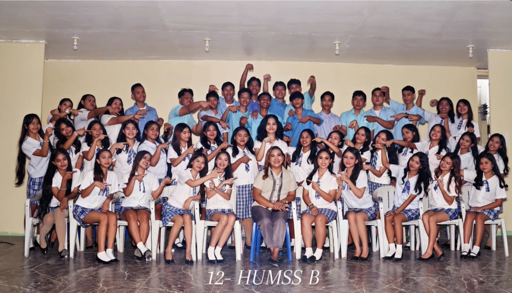
Our two years as HUMSS B were filled with laughter, friendship, challenges, and unforgettable memories. We may have started as classmates, but along the way, we became a family who supported and helped one another through different experiences. We are also thankful to our teachers, Madam Sol and Ms. Gen, for guiding us, teaching us, and being part of our journey. Their patience, lessons, and encouragement made our time together even more meaningful. This picture is more than just a class photo. It represents the memories, friendships, and moments that we will carry with us even after we leave HUMSS B. No matter where life takes us, we will always remember the two wonderful years we shared together.
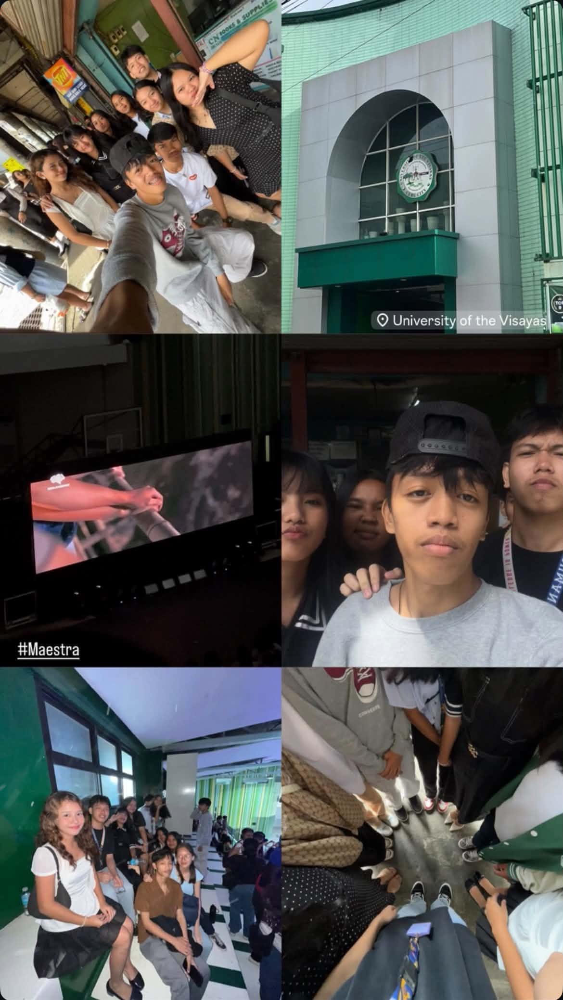
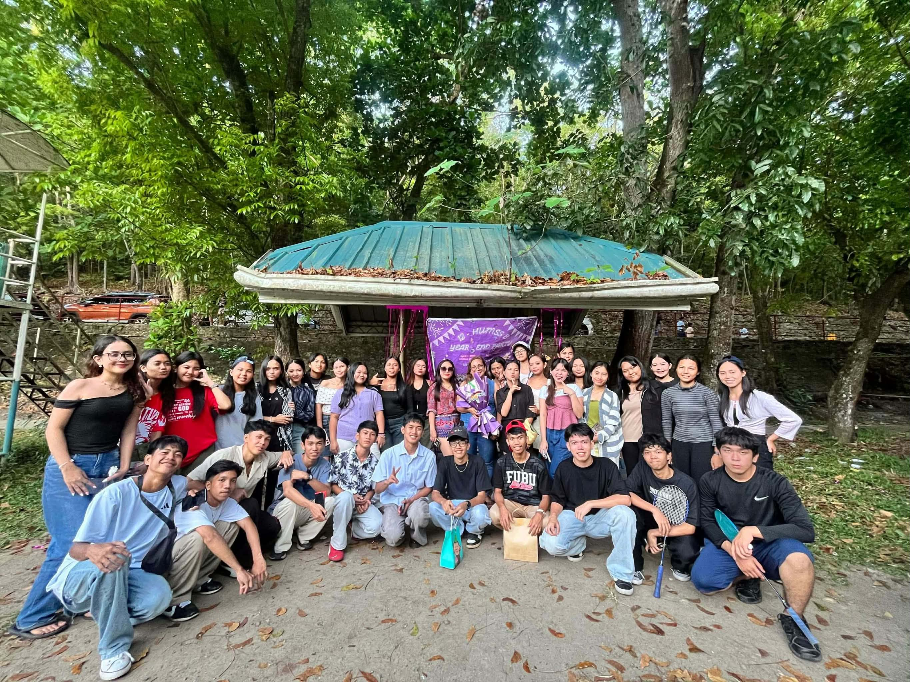
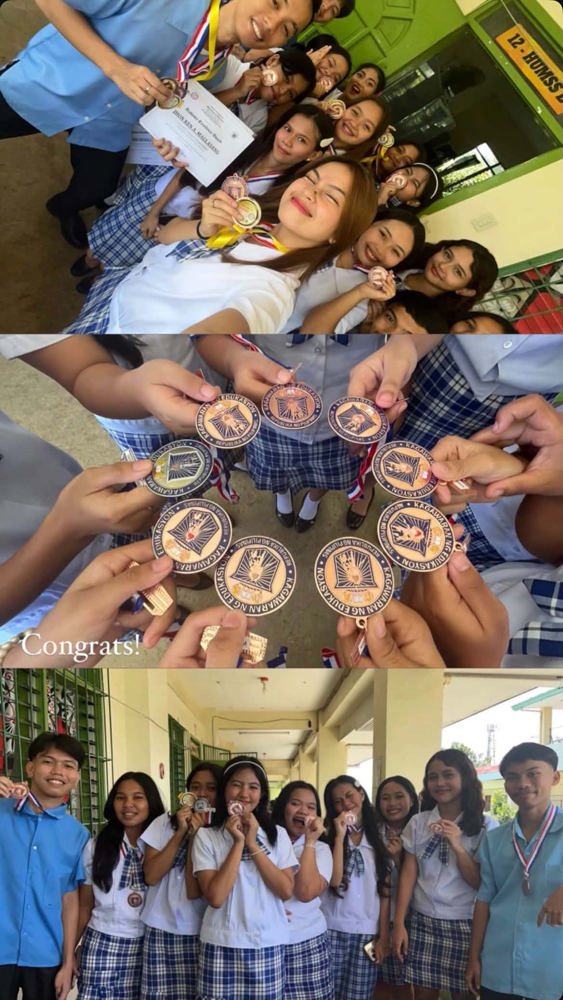
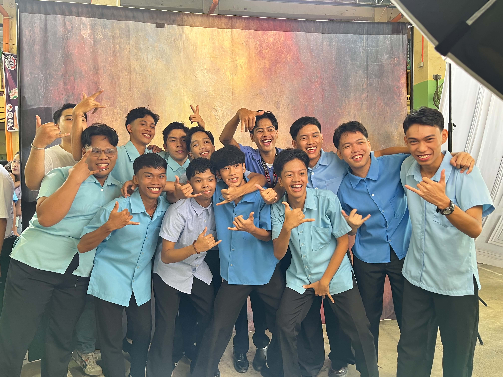
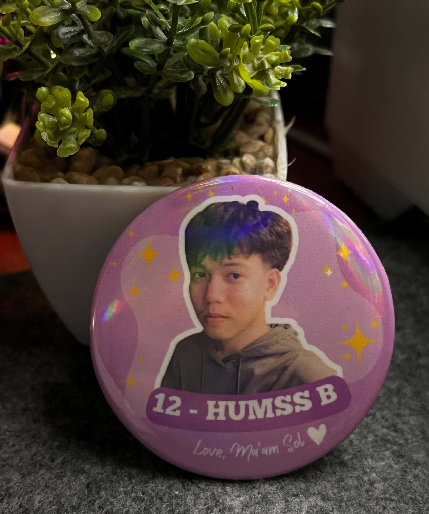
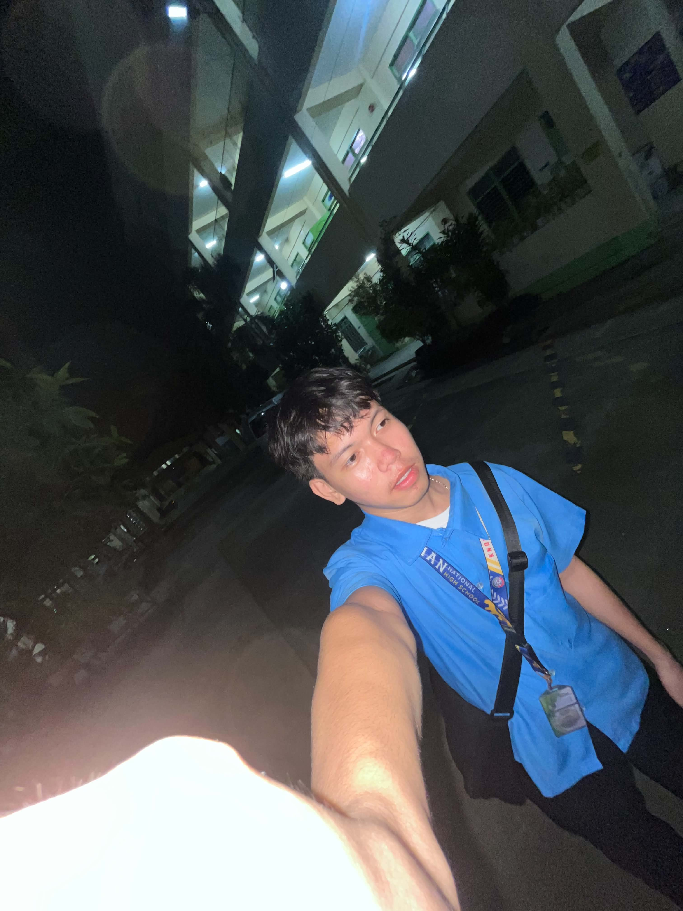
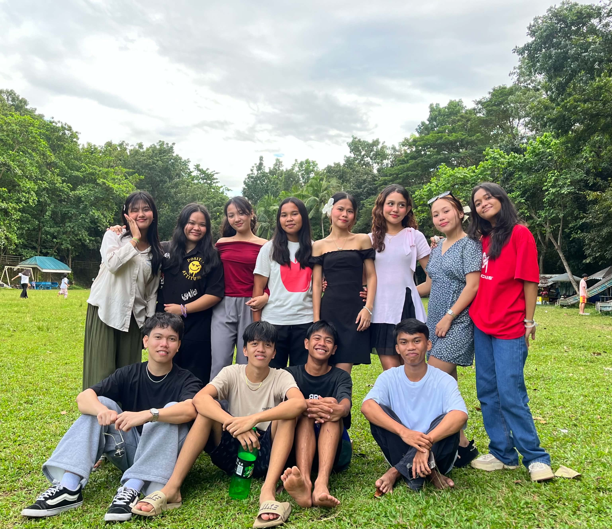
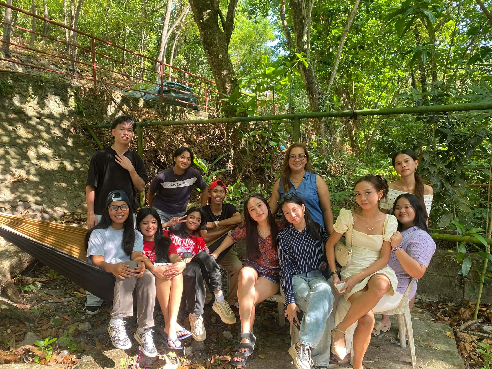
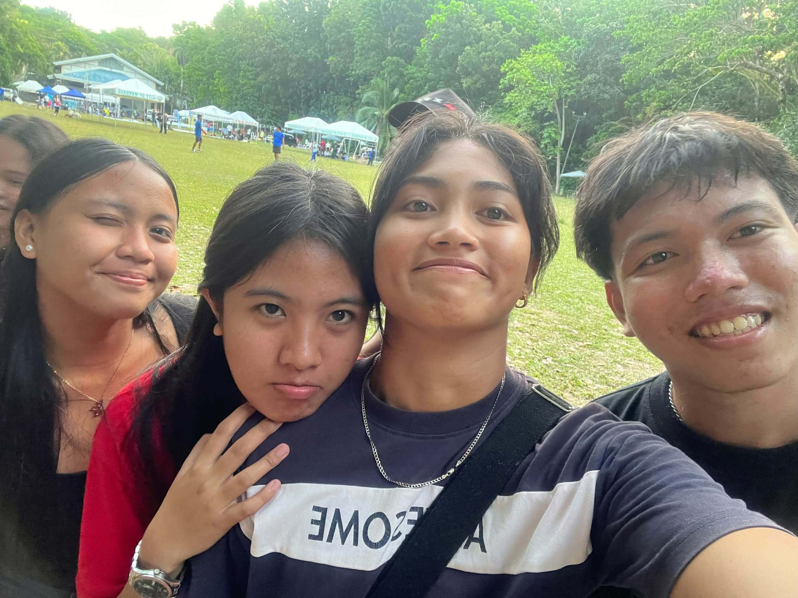
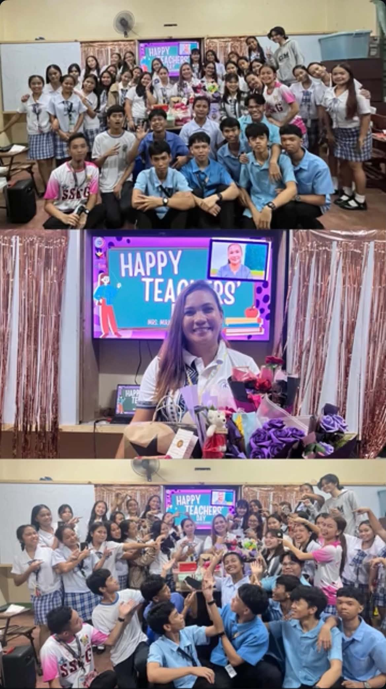
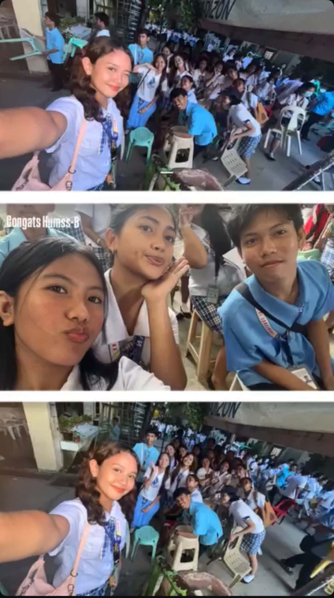